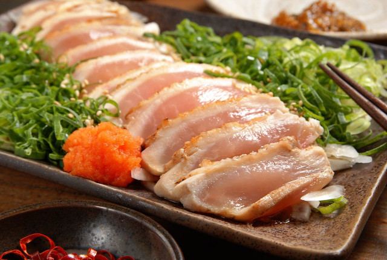

Click here to return to the homepage.
Chicken sashimi
What doesn't kill you makes you stronger.

Ingredients
- Chicken
- Dry flavoring like salt, herbs etc
- Wet flavoring like soy sauce, vinegar, etc
- Pickled ginger, wasabi or whatever.
Steps
- Be professionally licensed to prepare chicken sashimi.
- Flavor the chicken with dry flavoring. I imagine you can't really marinade for a while but will instead have to cook it very fresh.
- Slice the chicken.
- Serve with wasabi and pickled ginger.